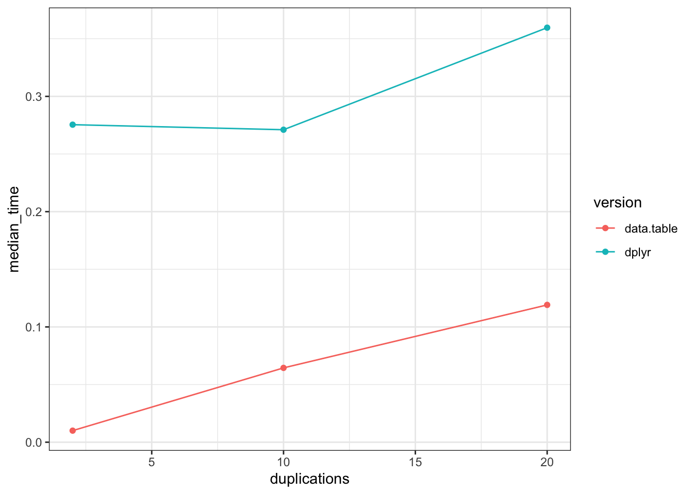

#pak::pak(c("nycflights13", "microbenchmark", "profvis", "bench", "tictoc", "atime", "dtplyr"))
library(tidyverse)
library(nycflights13)
library(microbenchmark)
library(bench)
library(tictoc)
library(atime)
library(profvis)While it’s fresh in my mind (mostly thanks to Tyson Barrett’s awesome material from our USCOTS workshop), I want to jot down the different ways to speed test your R Code.
First, let’s load up the packages I’ll use:
Now let’s make a little pipeline with nontrivial compute time (on my laptop, at least) that we can use to test things. I’m totally cheating here by just duplicating the dataset 10 times to make it bigger. And also ChatGPT wrote my pipeline. Anyways…
flights_big <- bind_rows(replicate(10, flights, simplify = FALSE))
flights_big |>
filter(!is.na(air_time), !is.na(tailnum), !is.na(dep_delay)) |>
group_by(tailnum) |>
summarise(
mean_air_time = mean(air_time),
sd_air_time = sd(air_time),
n = n(),
delay_score = sum((dep_delay)^2) / n()
) |>
left_join(planes, by = "tailnum") |>
mutate(
model_length = str_length(model),
manufacturer_upper = str_to_upper(manufacturer)
) |>
filter(!is.na(model_length), n > 50) |>
arrange(desc(delay_score))
#> # A tibble: 2,906 × 15
#> tailnum mean_air_time sd_air_time n delay_score year type manufacturer
#> <chr> <dbl> <dbl> <int> <dbl> <int> <chr> <chr>
#> 1 N384HA 626. 24.8 330 51368. 2011 Fixed… AIRBUS
#> 2 N276AT 114. 8.41 60 37738. 2005 Fixed… BOEING
#> 3 N6716C 202. 86.4 250 32628. 2001 Fixed… BOEING
#> 4 N550NW 108. 3.56 70 24047. 2001 Fixed… BOEING
#> 5 N203FR 233. 16.9 410 21445. 2002 Fixed… AIRBUS INDU…
#> 6 N184DN 239. 107. 160 18789. 1993 Fixed… BOEING
#> 7 N521VA 334. 15.4 270 18686. 2006 Fixed… AIRBUS
#> 8 N927DA 137. 21.3 820 17802. 1988 Fixed… MCDONNELL D…
#> 9 N635AA 185. 58.1 290 15948. 1990 Fixed… BOEING
#> 10 N923FJ 90.2 7.47 120 15756. 2004 Fixed… BOMBARDIER …
#> # ℹ 2,896 more rows
#> # ℹ 7 more variables: model <chr>, engines <int>, seats <int>, speed <int>,
#> # engine <chr>, model_length <int>, manufacturer_upper <chr>So that I don’t have to copy-paste that long pipeline several times, I’m going to wrap it in a quick silly function. You don’t need to do this in your workflow, it’s just saving blog post space.
do_the_thing <- function(dat) {
temp <- flights_big |>
filter(!is.na(air_time), !is.na(tailnum), !is.na(dep_delay)) |>
group_by(tailnum) |>
summarise(
mean_air_time = mean(air_time),
sd_air_time = sd(air_time),
n = n(),
delay_score = sum((dep_delay)^2) / n()
) |>
left_join(planes, by = "tailnum") |>
mutate(
model_length = str_length(model),
manufacturer_upper = str_to_upper(manufacturer)
) |>
filter(!is.na(model_length), n > 50) |>
arrange(desc(delay_score))
return("done")
}Level 1: Quick time checks
Most often, I just need a quick-and-dirty way to see approximately how long my code snippet is taking. Usually this is so I can estimate how long it will take to repeat many times; e.g. if I’m running some simulations in an experiment.
tl;dr - Use proc.time() or the tictoc package.
Maybe don’t use this: Sys.time()
A function that newer R users tend to know or find is Sys.time() to record the current time. So to speed test code, they will (reasonably) just check the time then manually calculate how much has elapsed:
start_time <- Sys.time()
do_the_thing(flights_big)
#> [1] "done"
now <- Sys.time() - start_time
print(now)
#> Time difference of 0.2220261 secsOne critique of this method is that it’s just measuring how much time elapsed in real life, not necessarily how much was spent on the code I’m testing. That is, if you have some other giant computation running on your computer at the same time, this might appear slower. More on that in a sec. For many users, wanting more of a quick look at a slowdown than a precise compute time, that’s not a big deal.
The real main drawback of this approach, aside from stylistic preference, is that the object you get from subtracting times is a difftime. I don’t like these, because they essentially return a number, with an attribute tacked on letting you know if it’s seconds or minutes.
class(now)
#> [1] "difftime"
str(now)
#> 'difftime' num 0.222026109695435
#> - attr(*, "units")= chr "secs"Here’s why that is bad. Suppose I have one task that takes a fraction of a second, and one task that takes a few minutes.
I time these out and I convert them to doubles so I can do math on them without the pesky difftime tagalong info.
start_time <- Sys.time()
for (i in 1:300) {
do_the_thing(flights_big)
}
now_2 <- Sys.time() - start_time
now_2
#> Time difference of 1.093376 minsas.double(now)
#> [1] 0.2220261
as.double(now_2)
#> [1] 1.093376Hmmm…. doing the task 300 times only took a little longer than doing it once? Very suspicious…
Of course, this problem is easy to avoid - and realistically, you’d more likely be just printing your times out than saving them somewhere - but it’s also a fairly easy pit to fall into while making reasonable choices.
Base R has your back: proc.time() and system.time()
You can get around both criticisms of Sys.time() simply by using proc.time() instead:
start_time <- proc.time()
do_the_thing(flights_big)
#> [1] "done"
now <- proc.time() - start_time
print(now)
#> user system elapsed
#> 0.171 0.048 0.219The now object is technically a proc_time object, but really it’s essentially just a named vector.
class(now)
#> [1] "proc_time"
str(now)
#> 'proc_time' Named num [1:5] 0.171 0.048 0.219 0 0
#> - attr(*, "names")= chr [1:5] "user.self" "sys.self" "elapsed" "user.child" ...The interesting bit here for now is the elapsed part - the distinction between user computations and system computations is subtle, and if it matters to your development, you’re probably better off using a helper package like those as the end of this post.
now[3]
#> elapsed
#> 0.219Since this is just a vector of doubles, and it’s consistently returned in seconds, there’s no danger of mixing and matching different units in weird ways.
For an alternate syntax, instead of calling proc.time() twice, you can call your code inside of system.time(), which is nice is your snippet is short:
system.time({
do_the_thing(flights_big)
})
#> user system elapsed
#> 0.159 0.037 0.198But wrappers are convenient: tictoc()
My favorite timing package is tictoc(), which is basically just a cute wrapper doing the same thing as proc.time():
tic()
do_the_thing(flights_big)
#> [1] "done"
toc()
#> 0.216 sec elapsedLike the Sys.time() approach, this one is really meant for quick timing printouts, not for saving results of many experiments. If you do want to save the result, you’ll find a list rather than a difftime or proc_time, even though the text printout looks the same as the difftimes did:
tic()
do_the_thing(flights_big)
#> [1] "done"
now <- toc()
#> 0.224 sec elapsed
class(now)
#> [1] "list"
str(now)
#> List of 4
#> $ tic : Named num 3.18
#> ..- attr(*, "names")= chr "elapsed"
#> $ toc : Named num 3.4
#> ..- attr(*, "names")= chr "elapsed"
#> $ msg : logi(0)
#> $ callback_msg: chr "0.224 sec elapsed"When you access the actual time measurement ($toc), it consistently returns a your time as a double in milliseconds.
now$toc
#> elapsed
#> 3.405
str(now$toc)
#> Named num 3.4
#> - attr(*, "names")= chr "elapsed"Another feature of tictoc() - although not one I see used often - is the ability to automatically keep a log of several tic() and toc() results.
tic.clearlog()
for (x in 1:10) {
tic(x)
do_the_thing(flights_big)
toc(log = TRUE, quiet = TRUE)
}
results <- tic.log()
results_raw <- tic.log(format = FALSE)
tic.clearlog()By default, the log gives a list of the messages in text form:
results[1:2]
#> [[1]]
#> [1] "1: 0.221 sec elapsed"
#>
#> [[2]]
#> [1] "2: 0.208 sec elapsed"However, you can also get the raw toc() object results:
results_raw[1:2]
#> [[1]]
#> [[1]]$tic
#> elapsed
#> 3.414
#>
#> [[1]]$toc
#> elapsed
#> 3.635
#>
#> [[1]]$msg
#> [1] 1
#>
#> [[1]]$callback_msg
#> [1] "1: 0.221 sec elapsed"
#>
#>
#> [[2]]
#> [[2]]$tic
#> elapsed
#> 3.635
#>
#> [[2]]$toc
#> elapsed
#> 3.843
#>
#> [[2]]$msg
#> [1] 2
#>
#> [[2]]$callback_msg
#> [1] "2: 0.208 sec elapsed"It’s messy to look at, but it plays nice with some tidyverse functions to yank out a vector of results in numeric form:
results_raw |>
map_dbl(~pluck(.x, "toc"))
#> [1] 3.635 3.843 4.060 4.310 4.766 5.135 5.404 5.671 5.928 6.205Level 2: Benchmarking
Now, if you are finding slowdowns in your code, you are probably also trying solutions to speed them up - whether this is different rearrangements of your pipeline, or calling in help from other packages. You’ll want to see which approach sped your code up best, and by how much. This is called Benchmarking.
For example, let’s consider running the gnarly pipeline with the data.table package instead. Since I don’t feel like translating the whole pipeline to the data.table syntax, instead I’ll just lean on the dtplyr package to do it for me.
library(dtplyr)
do_the_thing_dt <- function(dat) {
temp <- dat |>
lazy_dt() |>
filter(!is.na(air_time), !is.na(tailnum), !is.na(dep_delay)) |>
group_by(tailnum) |>
summarise(
mean_air_time = mean(air_time),
sd_air_time = sd(air_time),
n = n(),
delay_score = sum((dep_delay)^2) / n()
) |>
left_join(planes, by = "tailnum") |>
mutate(
model_length = str_length(model),
manufacturer_upper = str_to_upper(manufacturer)
) |>
filter(!is.na(model_length), n > 50) |>
arrange(desc(delay_score))
return("done")
}A quick timing shows that we sped our code up by almost 5 times!
tic()
do_the_thing(flights_big)
#> [1] "done"
toc()
#> 0.217 sec elapsed
tic()
do_the_thing_dt(flights_big)
#> [1] "done"
toc()
#> 0.067 sec elapsedRepeated tests with microbenchmark()
As you may have noticed throughout this post, running the exact same code twice doesn’t always take the exact same amount of time.
The microbenchmark package is helpful if you want to do a true experiment, and run the different approaches each many times before making a comparison. By default, it will run your code 100 times - be aware of how long this will take total before you start running code!
microbenchmark(
dplyr_version = do_the_thing(flights_big),
dt_version = do_the_thing_dt(flights_big)
)
#> Warning in microbenchmark(dplyr_version = do_the_thing(flights_big), dt_version
#> = do_the_thing_dt(flights_big)): less accurate nanosecond times to avoid
#> potential integer overflows
#> Unit: milliseconds
#> expr min lq mean median uq max neval
#> dplyr_version 210.06674 250.41693 257.65915 257.91749 268.71517 394.9760 100
#> dt_version 29.93234 40.30591 60.23163 53.06985 79.15314 124.5242 100Size experiments with bench
We saw that using data.table bought us quite a bit of time in this case. But would it be worth it if we hadn’t made the giant 10x version of the dataset?
The bench package has essentially the same syntax as microbenchmark, except that:
It only runs each code snippet once
It (very annoyingly) requires the output to be identical for the two snippets. I got around this by just returning “done” in each function.
bench::mark(
dplyr_version = do_the_thing(flights_big),
dt_version = do_the_thing_dt(flights_big)
)
#> Warning: Some expressions had a GC in every iteration; so filtering is
#> disabled.
#> # A tibble: 2 × 6
#> expression min median `itr/sec` mem_alloc `gc/sec`
#> <bch:expr> <bch:tm> <bch:tm> <dbl> <bch:byt> <dbl>
#> 1 dplyr_version 232.1ms 257ms 3.91 634MB 9.11
#> 2 dt_version 61.2ms 105ms 10.6 386MB 10.6So why would we use it? First, because you also get memory results, which I’ve kind of swept under the rug in this post. Usually, memory and speed results agree with each other, and we’re more interested in speed. But if you are benchmarking because you are worried about maxing out your memory, this is nice to have.
In this case, the code took about 600 MB and 400 MB of memory… my current laptop has 16,000 MB available, and R on Mac can typically access all of that, so no worries there! But perhaps if I wanted to run this code thousands of times, I might need to be careful with how much I store and how much I run in parallel.
Anyways. Without digressing too far into memory stuff - the reason to use bench over microbenchmark is to see how your speed improvements scale with size. We’ll use bench::press() to establish a set of values, then we’ll make a version of our flights_big dataset for each value, then we’ll benchmark our two versions of the code on those datasets.
results <- bench::press(
duplications = c(2, 10, 20),
{
flights_big <- bind_rows(replicate(duplications, flights, simplify = FALSE))
bench::mark(
dplyr_version = do_the_thing(flights_big),
dt_version = do_the_thing_dt(flights_big)
)
}
)
#> Warning: Some expressions had a GC in every iteration; so filtering is
#> disabled.
#> Warning: Some expressions had a GC in every iteration; so filtering is
#> disabled.
#> Warning: Some expressions had a GC in every iteration; so filtering is
#> disabled.
results
#> # A tibble: 6 × 7
#> expression duplications min median `itr/sec` mem_alloc `gc/sec`
#> <bch:expr> <dbl> <bch:tm> <bch:tm> <dbl> <bch:byt> <dbl>
#> 1 dplyr_version 2 244.33ms 275.5ms 3.63 634.3MB 9.08
#> 2 dt_version 2 8.02ms 10ms 62.9 77.4MB 9.82
#> 3 dplyr_version 10 209.62ms 271.1ms 3.69 634.3MB 7.38
#> 4 dt_version 10 34.36ms 64.5ms 13.2 385.7MB 11.3
#> 5 dplyr_version 20 351.19ms 359.6ms 2.78 634.3MB 9.73
#> 6 dt_version 20 101.77ms 119.1ms 6.93 771.1MB 5.20So, does the advantage of data.table scale linearly as the data gets bigger? Not really - both methods only get slightly slower as the data gets bigger, so dt goes from being something like 25 times faster on the small dataset to only 3 times faster on the large one.
Code
results |>
mutate(
version = rep(c("dplyr", "data.table"), 3),
median_time = as.double(median)
) |>
ggplot() +
aes(x = duplications, y = median_time, color = version) +
geom_point() +
geom_line() +
theme_bw()
Note
I’m being a little unfair to data.table here. The vast, vast majority of the time spent in the do_the_thing_dt() function is in converting the data frame to a data.table object with lazy_dt().
So basically, if you’re going to convert your data to a data.table once and then run a ton of pipelines/repetitions, then data.table is super helpful in larger data. But if it’s a one-off process, the cost of creating the data.table object is more than the speed-up of the code.
How do I know the time breakdown of the do_the_thing_dt() function? Read on…
Level 3: Profiling
The next notch up is to figure out where exactly, in our long pipeline, the slowdown is happening. This is called Profiling.
Quick look with profviz
profviz is a tool that makes interactive plots to explore the computation time of each routine and subroutine in your code. This time I’m copying the whole pipeline, so that profviz will measure the different steps instead of just the wrapper function.
profvis({
flights_big |>
filter(!is.na(air_time), !is.na(tailnum), !is.na(dep_delay)) |>
group_by(tailnum) |>
summarise(
mean_air_time = mean(air_time),
sd_air_time = sd(air_time),
n = n(),
delay_score = sum((dep_delay)^2) / n()
) |>
left_join(planes, by = "tailnum") |>
mutate(
model_length = str_length(model),
manufacturer_upper = str_to_upper(manufacturer)
) |>
filter(!is.na(model_length), n > 50) |>
arrange(desc(delay_score))
})
What is this telling us? We can see from the bottom “stack” of the plot that filter is by far the slowest step in our pipeline.
Detail (too much?) with Rprof
The Base R way to profile requires little fiddling.
First, we profile the code and save it to a .out file:
Rprof("results.out")
do_the_thing(flights_big)
#> [1] "done"
Rprof(NULL)Then, if we want to see the results, we have to read the results.out file using helper functions like:
summaryRprof("results.out")$by.self
#> self.time self.pct total.time total.pct
#> "vec_slice" 0.16 61.54 0.16 61.54
#> "^" 0.02 7.69 0.02 7.69
#> "<Anonymous>" 0.02 7.69 0.02 7.69
#> "mean" 0.02 7.69 0.02 7.69
#> "stopifnot" 0.02 7.69 0.02 7.69
#> "vec_locate_sorted_groups" 0.02 7.69 0.02 7.69This is telling us that the slowest procedure was vec_slice; which we could track down and find is part of the filter step.
There are a number of helper packages and functions for visualizing or understanding the full profiling output (e.g. profr, proftools)
Addendum: random thought about profiling pipelines
I wish there was a bit more pipeline-centric approach to profiling. Maybe a toodling project for another day.
But thought I had, if profiling feels daunting, is to manually break your pipeline up until you track down the bottleneck:
do_1 <- function(dat) {
dat |>
filter(!is.na(air_time), !is.na(tailnum), !is.na(dep_delay))
}
do_2 <- function(temp)
temp |>
group_by(tailnum) |>
summarise(
mean_air_time = mean(air_time),
sd_air_time = sd(air_time),
n = n(),
delay_score = sum((dep_delay)^2) / n()
)
do_3 <- function(temp) {
temp |>
left_join(planes, by = "tailnum") |>
mutate(
model_length = str_length(model),
manufacturer_upper = str_to_upper(manufacturer)
)
}
do_4 <- function(temp) {
temp |>
filter(!is.na(model_length), n > 50) |>
arrange(desc(delay_score))
}I’ll just be simple and split it up with tictoc(), but you could probably take a more systematic appraoch.
tic()
temp <- do_1(flights_big)
toc()
#> 0.236 sec elapsed
tic()
temp <- do_2(temp)
toc()
#> 0.113 sec elapsed
tic()
temp <- do_3(temp)
toc()
#> 0.001 sec elapsed
tic()
temp <- do_4(temp)
toc()
#> 0.001 sec elapsedI don’t really think the above was worth the effort… but consider this my official wish for a pipeline-step-measuring profiler! My vision would be that you put the pipeline through the profiler, and get back time/memory benchmarks for only the functions exposed in the pipeline. None of this vec_slice business; just a measurement on each successive step of the pipe.
Conclusion
This actually took longer than expected, mostly trying to understand the small differences in syntax, input structure, and output info of the various functions.
Takeaway messages:
Most of us just need a quick timer, and we can do that easily with
proc.time()orsystem.time()ortictoc()If you want to (a) average many runs of the speed test and/or (b) compare different solutions, use
microbenchmark(). If you want to see how speed scales with size, usebench::mark()Profiling is really really helpful for pinpointing the problem.
profvizgets you answers quickly;RProf()and friends get you all the info. But neither of these is as beginner/intermediate friendly as I would like.
Other little notes
If you want to get extra fancy with benchmarking, especially for purposes of checking if code updates on GitHub are actually improvements, check out the
atimepackage - great blog post about it hereI’m aware there are other benchmarking packages, e.g.
rbenchmark. I’m less familiar with those but would love to learn more, if you think there’s a reason a different one might be preferred!Here is a short post that gets deep in the weeds on benchmarking memory, including allocations in C.